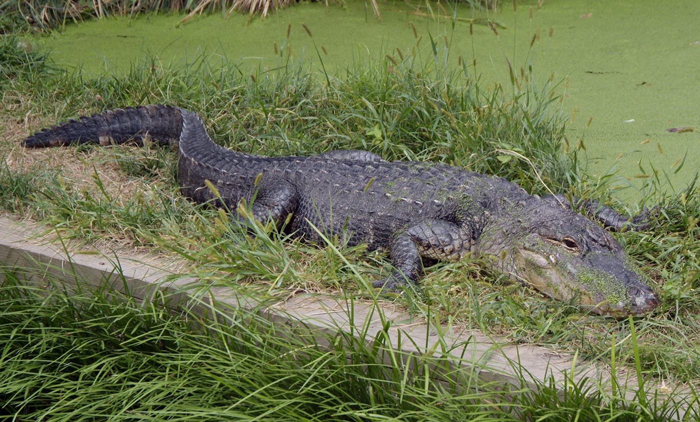

This is an animal that lives along the Wolf River. If you're walking or biking the greenway which runs along the Wolf River, you may observe this animal. Many people may not think of alligators living in the Mid-South but due to several mild winters, they have migrated north. They have used the Mississippi river since the late nineties and are beginning to show up all around the Memphis area.
ALLIGATOR